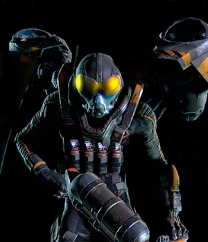

VAGALUME
Vagalume é um incendiário em série piromaníaco e inimigo recorrente do Batman.
Originalmente um especialista em pirotecnia, Garfield Lynns se voltou para o
crime realizando ataques incendiários e incendiando grandes partes de Gotham
no processo. Fiel ao seu nome, Vagalume foi originalmente concebido como um
inimigo baseado em luz do Batman e Robin. No entanto, as encarnações modernas
são retratadas como baseadas em fogo, muitas vezes usando dispositivos e armas
com meios pirotécnicos. Vagalume raramente é visto sem um traje capaz de
protegê-lo do calor, jetpack e lança-chamas. Em algumas histórias, ele é
retratado como tendo uma obsessão pelo fogo, com suas tendências piromaníacas
muitas vezes controlando suas ações.